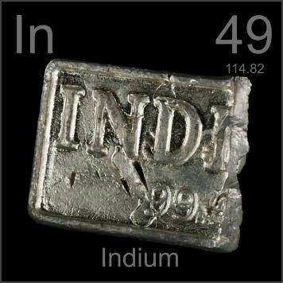

HOME
PREVIOUS
NEXT

Indium
Atomic Weight: 114.818
Density: 7.31 g/cm3
Melting Point: 156.6 °C
Boiling Point: 2072 °C
The commercial unit of trade for indium is the one-kilogram bar, which is a lot of indium. Its major uses are in low-melting-point alloys that replace mercury in thermometers, and in flat screen televisions.